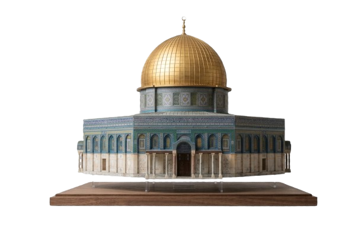
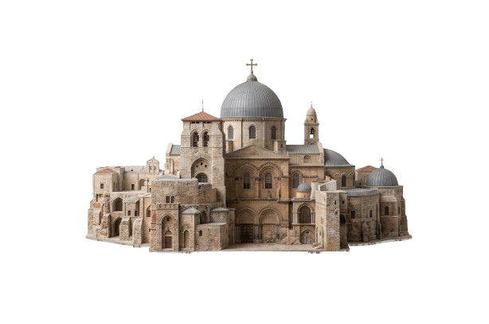
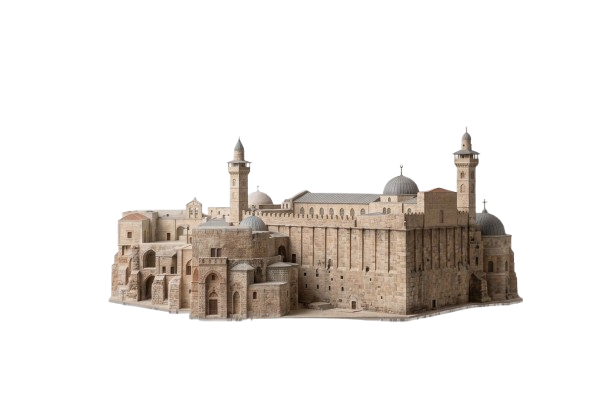
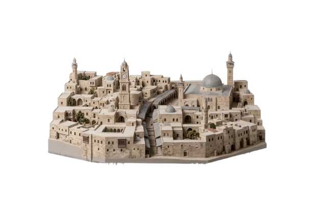
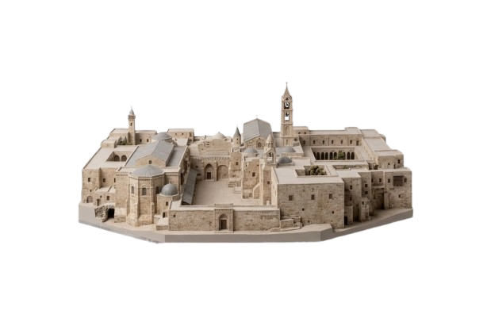
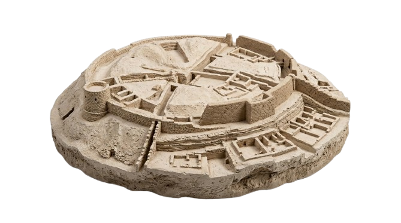
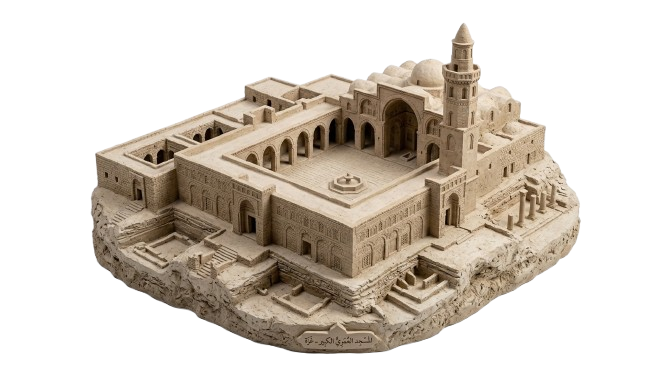
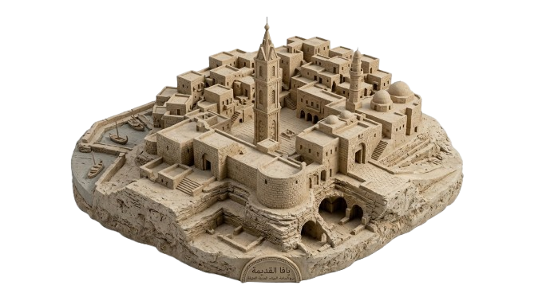

"معالم فلسطين.. شواهد على التاريخ"
اكتشف أبرز المعالم الدينية والتاريخية والطبيعية في مدننا الفلسطينية
استكشف معالمنامعالمنا.. فخرنا وهويتنا التي لا تضيع
اكتشف المزيد"معالمنا هي نبض هويتنا وفخر تاريخنا الذي لا يضيع. هنا في "أثر وطن"، نوثق الحكاية، ونحمي الأثر، ونعتز بجذورنا التي تعانق السماء أصالة وشموخاً."

قبة الصخرة - القدس
قبة الصخرة هي أول قبلة في الإسلام وثالث الحرمين الشريفين، قبتها الذهبية تزين سماء القدس منذ عام 691م، وهي أيقونة فلسطين الخالدة.
استكشف المعلم
كنيسة القيامة - القدس
أقدس موقع في المسيحية، حيث يعتقد أنه مكان صلب وقيامة السيد المسيح. كل عام يشهد سبت النور حدث "النور المقدس" الذي يفاجئ العالم.
استكشف المعلم
المسجد الإبراهيمي - الخليل
يضم قبور الخليل إبراهيم وإسحاق ويعقوب عليهم السلام، بني فوقه مسجد مهيب بجدران حمراء تعود للعهد الهيرودي قبل 2000 عام.
استكشف المعلم
البلدة القديمة-نابلس
متحف مفتوح يعود لأكثر من 9000 عام أسواقها المسقوفة تفوح برائحة الصابون الأصلي والكنافة الساخنة، وما زالت معاصر الصابون تعمل يدوياً.
استكشف المعلم
كنيسة المهد-بيت لحم
شيدت فوق المغارة التي ولد فيها السيد المسيح، وهي أقدم كنيسة قيد الاستخدام. بابها المنخفض "باب التواضع" يجعلك تحني رأسك احتراماً.
استكشف المعلم
تل السلطان-أريحا
أقدم مدينة مسوّرة في العالم (10,000 سنة قبل الميلاد). هنا تعلم الإنسان الزراعة والاستقرار، وأسوارها انهارت بصوت البوق كما تروي الكتب المقدسة
استكشف المعلم
المسجد العمري الكبير-غزة
أقدم مساجد غزة، بني فوق كنيسة بيزنطية. مئذنته المربعة الفريدة صامدة رغم محاولات التدمير، وتحكي تاريخ غزة العريق.
استكشف المعلمقلعة عكا-عكا
مدينة محصنة على البحر، تضم مدينة كاملة تحت الأرض بناها فرسان الإسبتارية. تجول في قاعاتها السرية وأسواقها العثمانية وستشعر وكأنك سافرت عبر الزمن.
استكشف المعلم
مدينة يافا القديمة-يافا
ميناء عمره 4000 عام، وأزقتها الضيقة وفنونها تجعلها لوحة حية. من مينائها انطلقت سفينة النبي يونس وسافرت الحمضيات الفلسطينية إلى العالم.
استكشف المعلم